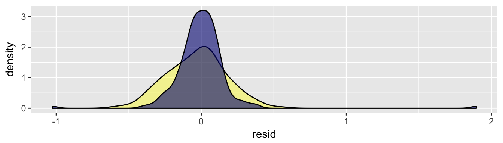

Chapter 8 Continuous Problems: How much should we expect…?
8.1 An Ordinary Case of Regression
Every year, cities and states across the United States publish measures on the performance and effectiveness of operations and policies. Performance management practitioners typically would like to know the direction and magnitude, as illustrated by a linear trend line. Is crime up? How are medical emergency response times? Are we still on budget? Which voting blocks are drifting?
For example, the monthly number of highway toll transactions in the State of Maryland is plotted over time from 2012 to early 2016. The amount is growing with a degree of seasonality. But to concisely summarize the prevailing direction of toll transactions, we can use a trend line. That trend line is an elegant solution that shows the shape and direction of a linear relationship, taking into account all values of the vertical and horizontal axes to find a line that weaves through and divides point in a symmetric fashion.
## toll_transactions has been loaded into memory.## Dimensions: n = 368, k = 7Figure 8.1: Total Toll Transactions, Maryland 2012 to 2016
This trend line can be simply described in using the following formula:
\[\text{transactions} = 10.501 + 0.036 \times \text{months}\]
and every point plays a role. We can infer that the trend grows at approximately 36,000 transactions per month. Using the observed response \(y\) and the independent variable \(x\), calculating the intercept and slope is a fairly simple task:
\[\text{slope = } \hat{w_1} = \frac{\sum_{i=1}^{n}{(x_i - \bar{x})(y_i-\bar{y})}}{\sum_{i=1}^{n}(x_i-\bar{x})^2}\] and
\[\text{intercept = } \hat{w_0} = \bar{y}-\hat{w_1}\bar{x}\] In a bivariate case such as this one, it’s easy to see the interplay. In the slope, the covariance of \(X\) and \(Y\) (\(\sum_{i=1}^{n}{(x_i - \bar{x})(y_i-\bar{y})}\)) is tempered by the variance of \(x\) (\(\sum_{i=1}^{n}(x_i-\bar{x})^2\)). If the covariance is greater than the variance, then the absolute value of the slope will be greater than one. The direction of the slope (positive or negative) is determined by the y7 between \(x\) and \(y\) alone.
Trend lines are one of many uses of a class of supervised learning algorithms called regression – in this case Ordinary Least Squares or Regression to the mean – a method that is specifically formulated for continuous variables. There are quite a few other types of regression, such as quantile regression, non-linear least squares, partial least squares among others – each of which handles continuous values with a different spin, some focused on estimating relationships at various points of an empirical distribution and others capture relationships that simply do not fit into a linear trend line.
OLS regression is the quantitative workhorse in most fields. The technique is a statistical method that estimates unknown parameters by minimizing the sum of squared differences between the observed values and predicted values of the target variable. To better understand arguably the most commonly used supervised learning method, we can start by defining a regression formula:
\[y_i = w_0 x_{i,0} + w_{1} x_{i,1} + ... + w_{k} x_{i,k} + \epsilon_{i}\]
where:
- \(y_i\) is the target variable or “observed response”
- \(w_{k}\) are coefficients associated with each \(x_k\). Each coefficient can be obtained by solving \(\hat{w} = (X'X)^{-1}X'Y\). Note that \(w\) may be substituted with \(\beta\) in some cases.
- \(x_{i,k}\) are input or independent variables
- subscript \(i\) indicates the index of individual observations in the data set
- \(k\) is an index of position of a variable in a matrix of \(x\)
- \(\epsilon_{i}\) is an error term that is assumed to have a normal distribution of \(\mu = 0\) and constant variance \(\sigma^2\)
Note that \(x_{i,0} = 1\), thus \(w_0\) is often times represented on its own. For parsimony, this formula can be rewritten in matrix notation as follows:
\[y = XW + \epsilon\] such that \(y\) is a vector of dimensions \(n \times 1\), \(X\) is a matrix with dimensions \(n \times k\) regressors, and \(W\) is a vector of coefficients of length \(k\), containing an intercept and a coefficient corresponding to each of \(k\) features. \(W\) is oftem times represented with \(\beta\).
\[TSS = argmin (\sum^n_{i=1}(y_i - \sum^k_{j=1} x_{ij}w_j)^2\]
Given this formula, the objective is to minimize the Total Sum of Squares (also known as Sum of Squared Errors):
\[TSS = \sum_{i=0}^{n}{(y_i - \hat{y}_i)^2} \] Which can also be written by substituting the prediction formula that yields \(\hat{y}\):
\[TSS = \sum^n_{i=1}(y_i - \sum^k_{j=1} x_{ij}w_j)^2\]
where \(k\) is the total number of variables and \(j \in k\). More commonly, TSS is better contextualized as the Mean Squared Error \[MSE = \frac{1}{n}\sum_{i}^{n}{(y_i - \hat{y_i})^2}\]. The SSE and MSE are measures of uncertainty relative to the observed response. Minimization of least squares can be achieved through a a method known as gradient descent.
8.1.1 Interpretation
There are a number of attributes of a linear squares regression model that are examined, namely the specification, coefficients, R-squared, and error.
Specification and coefficients The specification is the formulation of a model, comprised of the target feature and the input features. It is often times represented loosely as:
\(Y = f(x_1, x_2,...,x_n)\)
Each of the \(w\) values is a coefficient that describes the marginal relationship between each \(x\) and the target \(y\). Recall the toll road example.
\[\text{transactions} = 10.501 + 0.036 \times \text{months}\]
The \(w_0\) (or y-intercept) is equal to 10.501, meaning when months = 0, the expected traffic was 10.5 million (without accounting for seasonality). The \(w_1\) or coefficient for month is 36,000, meaning that for each additional month forward, we would expect an average 36,000 traffic increase. As we will see in the the following elaborated example, these coefficients will offer robust insights into the inner quantitative workings of the modeled relationship. As we will see in the practical example at the end of this section, there are countless ways of representing relationships.
R-squared R-squared or \(R^2\) is a measure of the proportion of variance of the target variable that can be explained by a estimated regression equation. A few key bits of information are required to calculate the \(R^2\), namely:
- \(\bar{y}\): the sample mean of \(y\);
- \(\hat{y_i}\): the predicted value of \(y\) for each observation \(i\) as produced by the regression equation; and
- \(y_i\): the observed value of \(y\) for each observation \(i\).
Putting these values together is fairly simple:
Total Sum of Squares or TSS is the variance of \(y\): \[\text{TSS} = \sigma^2(y) = \sum_{i=1}^{n}(y_i - \hat{y})^2\]
Sum of Squared Errors is the squared difference between each observed value of \(y\) and its predicted value \(\hat{y_i}\): \[\text{SSE} = \sum_{i=1}^{n}(y_i - \hat{y_i})^2\]
Regression Sum of Squares or RSS is the difference between each predicted value \(\hat{y_i}\) and the sample mean \(\bar{y}\).
Together, \(R^2 = 1 - \frac{SSE}{TSS}\). As TSS will always be the largest value, \(R^2\) will always be bound between 0 and 1 where a value of \(R^2 = 0\) indicates a regression line in which \(x\) does not account for variation in the target whereas \(R^2 = 1\) indicates a perfect regression model where \(x\) accounts for all variation in \(y\).
Error
Error can be measured in a number of ways in the OLS context. The most common is the Root Mean Square Error (RMSE), which is essentially the standard error between predictions \(\hat{y_i}\) and \(y_i\). RMSE is defined as \(\text{RMSE} = \sigma = \sqrt{\frac{\sum_{i=1}^n(\hat{y_i}-y_i)^2}{n}}\). Note that RMSE is interpreted in terms of levels of \(y\), which may not necessarily facilitate easy communication of model accuracy. For example, a \(\text{RMSE = 0.05}\) in one model might appear to be small relative to a \(RMSE = 164\). However, when contextualized, the former may be a larger proportion of its respective sample mean than the latter’s, indicating a less accurate fit.
There are other methods of representing error. In time series forecasts, Mean Absolute Percentage Error (MAPE) is used to contextualize prediction accuracy as a percentage of \(y\). This measure is defined as \(\text{MAPE} = \frac{100}{n}\sum_{i=1}^n|\frac{\hat{y_i}-y_i}{y_i}|\) and can be easily interpretted and communicated. For example, MAPE = 1.1% from one model can be compared against the MAPE = 13.5% of another model.
8.1.2 Assumptions matter
All models have properties and assumptions that guide their use, but also help determine which use cases are appropriate. OLS is bound by four basic assumptions that, in general, jive with how most people like to view math problems: in a linear, additive frame of mind where each factor has a distinct and perceivably consistent influence on the outcome. In other words:
Giovanni: How do you think those entrepreneurs made all that money (dependent variable)?
Giorgio: Well, I think it may be due to …[independent variables go here]…
First, OLS assumes that the target feature’s relationship with input features is linear and additive. The equation \(y_i = w_0 x_{i,0} + w_{1} x_{i,1} + ... + w_{k} x_{i,k} + \epsilon_{i}\) is another way of saying that each of the factors can be weighed and summed up to equate to the outcome. If we think about the above conversation, it is assumed that earnings can be described by a set of independent factors to which a weight can be definitively assigned to describe its role in earnings. This weighted average of factors is then added together. While this seems reasonable, it also is a strong assumption that two or more quantities have a linear relationship. If there is not a strong correlationship between the target \(y\) and inputs \(X\), apply transformations such as the natural logarithm (log()). In time series models (data captured over equal intervals), data may be non-stationary (e.g. unstable) and may benefit from differencing (e.g. \(\Delta(y_t) = y_t -y_{t-1}\) – try the diff() function). If worse comes to worse, a non-linear or tree-based technique, as will be described later in the book, may be better at capturing the patterns.
Figure 8.2: Ways of transforming data to [hopefully] make them appropriate for linear models.
Second, all observations are randomly sampled such that the features \(X\) for a given observation \(i = 1\) are not dependent on observation \(i = 2\). This assumption has many implications across observations and across features. To be able to estimate the specification below, Giovanni and Giorgio would need to first define a universe of entrepreneurs and identify a target that is dependent on input features, but the inputs are not dependent on the target. From that universe of entrepreneurs, obtain a list of people, then randomly select a subset for data collection.
\[\text{Y(Earnings) = f(Education, Age, Socioeconomic Status, Industry, ...)}\]
The survey needs to frame questions in a way that can roll into input features that are not correlated with one another. For example, education should not perfectly correlate with age, but should correlate with earnings. This matters as the linear specification needs to be able to attribute a part of earnings to each input feature, but has trouble doing in the presence of multicollinearity or when two or more variables are highly correlated. As the number of input features \(k\) grows, the chance of multicollinearity grows. The implications
The regression equation has an error term \(\epsilon\) that captures everything else that is not predicted by a model. This error term carries tremendous information that can be used to make a model more reliable. A number of assumptions are also thus built upon errors:
The conditional mean should be zero \(E(\epsilon|X) = 0\), meaning that the error should not have any relationship to the input features \(X\).
Errors should have constant variance or be homoscedastic. Given the variance of the error \(Var(\epsilon|X) = \sigma^2\), the spread should be constant (middle). Heterscedastic errors may be an indication that the underlying relationship between the target and input features may not be consistent or there are systematic errors with how the data was collected, both of which have an effect on the reliability of predictions. For reliability of estimates, heteroscedastic errors would lead to inaccurate confidence intervals.
Figure 8.3: Homoscedasticity vs. Heterscedasticity
Errors should be autocorrelated, or correlated amongst each other. Under the ideal scenario, the covariance should be \(cov(\epsilon_i\epsilon_j|x) = 0\) where i and j are index values of observations and are not equal to one another. Any data that involves a trend and cyclicality or seasonality will likely suffer from autocorrelation, thus the weather yesterday may be correlated with weather today. Generally, autocorrelation can appear in any context that is spatial (e.g. German cities are likely to have more autocorrelation within country than with outside the country with the US) or more commonly temporal (e.g. yesterday is associated with today).
The errors should be normally distributed. This assumption is not necessary when evaluating the validity of a model, but provides a clue as to how well the model operates.
8.1.3 In the code
To understand how a function works means to build it from scratch. Below, we illustrate how OLS is constructed using time series data about online searches relating to _human rights" as found on Google Trends, then compare our model coefficients against the pre-built lm() function. Starting off, be sure to install the gtrendsR, then execute a request for “Human rights” for the period of January 2011 through January 2017. Note that the number of hits is an index value to the maximum number of searches for the requested topic during the period of interest.
#Load library
library(gtrendsR)
library(ggplot2)
#Download human rights for
out = gtrends(c("Human rights"), gprop = "web", time = "2011-01-01 2017-01-01")[[1]]
#Monthly line plot
ggplot(out, aes(date, hits)) + geom_line()Figure 8.4: Google trends monthly time series for Human Rights searches, Jan. 2011 through Jan. 2017
The resulting data series exhibits some degree of regularity – perhaps a combination of monthly seasonality and a slight downward trend. A specification can be represented as:
\[\text{Hits Index} = w_0 + w_1(\text{date index}) + w_2(January) + ... + w_{13}(November) + \epsilon\]
where the date index is a sequential identifier for each month and each month is a represented as a dummy, leaving one month in reserve to avoid collinearity traps. The goal of the regression model is to estimate a weight for each input feature and the intercept. Thus, a matrix X needs to include a value for each input \(x_k\) including a placeholder for the intercept. Using model.matrix(), we can convert a vector of months into a matrix of dummies with the first column representing the y-intercept.
#Monthly dummies
month = format(out$date, "%m")
dummies = model.matrix(~ month)
colnames(dummies)## [1] "(Intercept)" "month01" "month02" "month03" "month04"
## [6] "month05" "month06" "month07" "month08" "month09"
## [11] "month10" "month11" "month12"Next, we create a simple sequential date index and add it to the dummies matrix to create X.
#Date Index
date.index <- 1:nrow(out)
#Create matrix
X <- cbind(dummies[, -13], date.index)
head(X)## (Intercept) month01 month02 month03 month04 month05 month06 month07
## 1 1 1 0 0 0 0 0 0
## 2 1 0 1 0 0 0 0 0
## 3 1 0 0 1 0 0 0 0
## 4 1 0 0 0 1 0 0 0
## 5 1 0 0 0 0 1 0 0
## 6 1 0 0 0 0 0 1 0
## month08 month09 month10 month11 date.index
## 1 0 0 0 0 1
## 2 0 0 0 0 2
## 3 0 0 0 0 3
## 4 0 0 0 0 4
## 5 0 0 0 0 5
## 6 0 0 0 0 6Lastly, extract the hits feature from the trends data as a standalone vector \(y\).
y <- out$hitsWith the vector \(y\) and matrix \(X\), we can now estimate each coefficient \(w_i\) by solving for the following equation: \(W = (X^TX)^{-1}X^Ty\). As R is well-adapted to statisticians’ needs, the %*% operator is an easy way to conduct matrix multiplication between two matrices. The solve() function is used to solve for a system of equations. In this case, solve() inverts the result of \(X^TX\).
a <- t(X) %*% X
w <- solve(a) %*% t(X) %*% yLikewise, we can estimate the same regression using the lm() function and extract the coefficients to illustrate that the calculation steps yield identifical results. While the lm() function makes the process far simpler and is designed to facilitate analysis with ease, there is something to be said for being able to engineer the underlying steps as it may come in handy when building new classes of algorithms.
#Run lm()
lm.obj <- lm(y ~ X[,-1])
#Consolidate and compare model coefficients
comparison <- data.frame(`From Scratch` = w,
`lm Function` = coef(lm.obj))
#Print
print(comparison)| From.Scratch | lm.Function | |
|---|---|---|
| (Intercept) | 75.4206349 | 75.4206349 |
| month01 | 0.6562736 | 0.6562736 |
| month02 | 10.0506425 | 10.0506425 |
| month03 | 17.3622449 | 17.3622449 |
| month04 | 11.3405140 | 11.3405140 |
| month05 | 14.6521164 | 14.6521164 |
| month06 | -4.5362812 | -4.5362812 |
| month07 | -14.7246788 | -14.7246788 |
| month08 | -12.7464097 | -12.7464097 |
| month09 | 1.2318594 | 1.2318594 |
| month10 | 8.8767952 | 8.8767952 |
| month11 | 10.3550642 | 10.3550642 |
| date.index | -0.1449358 | -0.1449358 |
For more in-depth discussion on the derivation of linear models, refer to Chapter 3 of Introduction to Statistical Learning.
8.2 More Than Plain Vanilla Regression
8.2.1 The Ridge and the LASSO
More often than not, the qualities that bound a data set are not ideal. Imagine a scenario in which \(n = 1000\), but the number of features \(k = 5000\). In an increasingly data-rich world, this is becoming more common. This leads to a number of methodological problems. Generally, analysts and policy makers want a parsimonious explanation as fewer driving factors are easier to interpret. An analyst may be tempted to use his or her intuition to guide her variable choices using tests such as AIC, BIC, F-Test among others. However, when \(k\) is large, a manual strategy may not necessarily be scalable and the strongest predictors may simply be overlooked, whether due to overriding theoretical assumptions (e.g. economic theory, policy theories) or inability to screen and test all variable combinations. From a purely statistical perspective, least squares is dependent on being able to solve for \((X'X)^{-1}\) – or inverting the matrix in order to calculate each of the coefficients \(w\), which is not possible if the matrix were singular (not invertible).
Enter regularized regression methods.
As we know with linear regression, the goal is to estimate \(\w\) by minimizing the Total Sum of Squares (TSS):
\[\hat{w} = (X'X)^{-1}X'Y\]
where each \(X\) and \(Y\) is standardized (mean 0 with unit variance). If we assume that there is a limited amount of TSS, then we can force linear regression to make trade offs between coefficients by introducing a bias term – a constraint \(\lambda I_k\) can be added to the diagonals of \(X'X\):
\[\hat{w} = (X'X + \lambda I_k)^{-1}X'Y\].
\(\lambda\) is a tuning parameter – a value that cannot be solved for and must be uncovered through cross-validation. Depending on how much bias is added into the model determines how much “wiggle room” coefficients have to move. Expanding upon the typical TSS, \(\lambda\) is tacked onto the end of the formula as a scalar of the sum of squared coefficients (an L2-norm):
\[TSS_{penalized} = \sum^n_{i=1}(y_i - \sum^k_{j=1} x_{ij}w_j)^2 + \lambda \sum^k_{j=1}|w_j|^2\]
The second part of the penalized TSS can be viewed as a constraint. Given the standard TSS \(\sum^n_{i=1}(y_i - \sum^k_{j=1} x_{ij}w_j)^2\), we place a constraint such that \[\sum^k_{j=1}|w_j|^2 < c \]
where \(c > 0\). Taken together, the interpretation of \(\lambda\) is that it regulates the size of coefficients \(w\): As the size \(\lambda\) is increased, the magnitude of coefficients are reduced. The value of \(\lambda\) is determined through a grid search in which values of \(\lambda\) are tested at equal intervals to identify the value that minimizes some error measure such as MSE. This specific formulation of a regularization is known as a ridge regression and helps to bound coefficients to a “reasonable” range, but does not zero out coefficient values.
In order to surface the most “influential” features, we may rely on a close cousin of ridge regression known as Least Absolute Shrinkage and Selection Operator or LASSO, which relies on an L1-norm: \[\sum^k_{j=1}|w_j| < c\]. By swapping a L2-quadratic constraint with a L1, least squares will behave differently.
To understand the effects on how least squares model behave under regularization, we can use a geometric interpretation. Constraints force the possible OLS esimates to fall along the edge of a constraint region. In the diagram below, the blue are the L1/L2 norm constraints, the concentric ellipses are various possibilities of the Residual Sum of Squares, and two coefficients are considered. The tangent at which a RSS ellipse and a constraint region meets jointly determines the magnitude of a coefficient – there is a trade off imposed due to the constraints. In the case of Ridge regression, the L2-norm constraint region is circular, meaning that a large coefficient \(w_1\) for a feature \(x_1\) is possible when minimizing the magnitude of coefficient \(w_2\). In LASSO regression, the L1-norm results in a constraint region with “corners”. If the RSS ellipse lands on acorner, a coefficient \(w_2\) can be forced to exactly zero while allowing \(w1\) take a non-zero value. The significance of this is far reaching: LASSO regression can conduct variable selection.

Figure 8.5: Ridge and LASSO constraint regions and their effect on OLS estimates.
There are hurdles in using these methods, however.
Uncertainty in the form of standard errors is a mainstay of statistical methods. While standard errors can be derived for Ridge regression as the estimator is linear, the same property is not shared by LASSO due to the L1-constraint.
One would expect that collinearity should be a concern, in particular the number of input features exceeds the number of observations. As it turns out, Ridge regression is robust to collinearity, but LASSO is not.
8.2.2 Why regularized methods matter
In situations where priors are not known and the features are too numerous to individually test, regularized regression methods facilitates analysis and prediction at scale. Perhaps this class of techniques goes against time-honored scientific traditions of starting from a well-defined hypothesis, then systematically proving and disproving arguments for and against the hypothesis. But alternatively, regularized methods may take on the roles of as both an exploratory method and a predictive method. LASSO regression, in particular, can serve as a methodological gut check and surface features that contain predictive value.
Cases where regularization is commonly used:
- If users of a service provide ratings and written comments that are not in a structured form, the words can be treated as n-gram features on which the ratings can be regressed upon. Using a LASSO, the most important phrases will be surface
- Geneticists often use DNA microarrays to capture thousands of genes and how they are expressed. LASSO can be used to surface which genes are most associated with a given gene expression.
- In marketing, a common task is to target advertisements and product offers to customers who wil buy the product. With the plethora of customer-level data from demographic characteristics to purchasing patterns, a data analyst may have hundreds if not thousands of measures on a given person and thus may be challenged with high dimensionality. Regularized regression can be useful in surfacing important factors and predict a customer’s propensity to buy a product.
For a step-by-step walkthrough of regularized methods, see What do I do when there are too many features? in the DIY section of this chapter.
8.3 K-Nearest Neighbors
8.3.1 Formulation
Continuous values can also be handed using non-parametric means. K-nearest neighbors (KNN) is a pattern recognition algorithm that is based on a simple idea: observations that are more similar will likely also be located in the same neighborhood. Given a class label \(y\) associated with input features \(x\), a given record \(i\) in a dataset can be related to all other records using Euclidean distances in terms of \(x\):
\[ \text{distance} = \sqrt{\sum(x_{ij} - x_{0j})^{2} }\]
where \(j\) is an index of features in \(x\) and \(i\) is an index of records (observations). For each \(i\), a neighborhood of taking the \(k\) records with the shortest distance to that point \(i\). From that neighborhood, the value of \(y\) can be approximated. Given a discrete target variables, \(y_i\) is determined using a procedure called majority voting where the most prevalent value in the neighborhood around \(i\) is assigned. For example, the ten closests points relative to a given point \(i\) are provided:
Choosing a value of \(k = 4\) would mean that the subsample is made up of three a’s and one b. As a makes up the majority, we can approximate \(y_i\) as a, assuming points that are closer together are more related. For continuous variables, the mean of neighboring records is used to approximate \(y_i\).
How does one implement this exactly? To show this process, we will write some pseudocode. It’s an informal language to articulate and plan the steps of an algorithm or program, principally using words and text as opposed to formulae. There are different styles of pseudocode, but the general rules are simple: indentation is used to denote a dependency (e.g. control structures). For all techniques, we will provide pseudocode, starting with kNN:
Pseudocode
kNN( k, set, y, x){
Pre-Process (optional):
> Transform or standardize all input features
Loop through each `item` in `set`{
> Calculate vector of distances in terms of x from `item` to all other items in `set`
> Rank distance in ascending order
if target `y` is continuous:
> Calculate mean of `y` for items ranked 1 through k
else if target is discrete:
> Calculate share of each discrete level for items ranked 1 through k
> Use majority voting to derive expected value
}
}The procedure described above yields the results for just one value of \(k\). However, kNNs, like many other algorithms, are an iterative procedure, requiring tuning of hyperparameters – or values that are starting and guiding assumptions of a model. In the case of kNNs, \(k\) is a hyperparameter and we do not precisely know the best value of \(k\). Often times, tuning of hyperparameters involves a grid search, a process whereby a range of possible hyperparameters is determined and the algorithm is tested at equal intervals from the minimum to maximum of that tuning range.
To illustrate this, a two-dimensional dataset with a target \(y\) that takes of values \(0\) and \(1\) has been plotted below. Graph (1) plots the points, color-coded by their labels. Graph (2), (3), and (4) show the results of a grid search along intervals of a \(log_{10}\) scale, where the background is color-coded as the predicted label for the corresponding value of \(k\). In addition to \(k\), two measures are provided above each graph to help contextualize predictions: the True Positive Rate or \(TPR\) and the True Negative Rate or \(TNR\).
The \(TPR\) is defined as #\(TPR = \frac{\text{Number of values that were correctly predicted}}{\text{Number of actual cases values}}\)#. The \(TNR\) is similarly defined as #\(TNR = \frac{\text{Number negative values that were correctly predicted}}{\text{Number of actual negative values}}\)#. Both are measures bound between 0 and 1, where higher values indicate a higher degree of accuracy. A high \(TPR\) and low \(TNR\) indicates that the algorithm is ineffective in distinguishing between positive and negative cases. The same is true with a low \(TPR\) and high \(TNR\). This is exactly the case in Graph (4) where all points are classified as \(Y = 1\), which is empirically characterized by \(TNR = 0.02\) and \(TPR = 1\).
Figure 8.6: Comparison of prediction accuracies for various values of k.
8.3.2 Which K is the right K?
The accuracy of a KNN model is principally dependent on finding the right value of \(k\) directly determines what enters the calculation used to predict the target variable. Thus, to optimize for accuracy, try multiple values of \(k\) and compare the resulting accuracy values. It is helpful to first see that when \(k = n\), kNNs are simply the sample statistic (e.g. mean or mode) for the whole dataset. Below, the True Positive Rate (TPR, blue) and True Negative Rate (TNR, green) have been plotted for values of \(k\) from 1 to \(n\). The objective is to ensure that there is a balance between TPR and TNR such that predictions are accurate. Where \(k > 20\), the TPR is near perfect. For values of \(k < 10\), TPR and TNR are more balanced, thereby yielding more reliable and accurate results.
Figure 8.7: True Positive Rate (TPR = blue) and True Negative Rate (TNR = green) performance for varying values of k
There are other factors that influence the selection of \(k\):
- Scale. kNNs are strongly influenced by the scale and unit of values of \(x\) as ranks are dependent on straight Euclidean distances. For example, if a dataset contained measurements of age in years and wealth in dollars, the units will over emphasize income as the range varies from 0 to billions whereas age is on a range of 0 to 100+. To ensure equal weights, it is common to transform variables into standardized scales such as:
- Range scaled or \[\frac{x - \min(x)}{\max(x)-\min(x)} \] yields scaled units between 0 and 1, where 1 is the maximum value
- Mean-centered or \[ \frac{x - \mu}{\sigma}\] yield units that are in terms of standard deviations
- Grids. Similar to the scale issue, KNNs are particularly effective in data that are distributed on a grid – measurements along a continuous scale at equal incremenets, but may be a poor choice when the data are mixed data formats such as integers and binary.
- Symmetry. It’s key to remember that neighbors around each point will not likely be uniformly distributed. While kNN does not have any probabilistic assumptions, the position and distance of neighboring points may have a skewing effect.
8.3.3 Usage
KNNs are efficient and effective under certain conditions:
- KNNs can handle target values that are either discrete or continuous, making the approach relatively flexible. However, best performance is achieved when the input features should are in the same scale (e.g. color values in a grid).
- They are best used when there are relatively few features as distances to neighbors need to be calculated for each and every record and need to be optimized by searching for the value of \(k\) that optimizes for accuracy. In cases where data is randomly or uniformly distributed in fewer dimensions, a trained KNN is an effective solution to filling gaps in data, especially in spatial data.
- KNNs are not interpretable as it is a nonparametric approach – it does not produce results that have a causal relationship or illustrate. Furthermore, kNNs are not well-equipped to handle missing values.
For a step-by-step walkthrough of regularized methods, see What’s a good way to fill-in missing data? in the DIY section.
8.4 DIY
8.4.1 What’s a good way to fill-in missing data?
In practice in R, KNNs can be trained using the knn() function in the class library. However, this function is best suited for discrete target variables. To illustrate KNN regressions, we will write a function from scratch and illustrate using remote sensed data. Remote sensing is data obtained through scanning the Earth from aircrafts or satellites. Remote sensed earth observations yield information about weather, oceans, atmospheric composition, human development among other things – all are fundamental for understanding the environment. As of Jan 2017, the National Aeronautics and Atmospheric Administration (NASA) maintains two low-earth orbiting (LEO) satellites named Terra and Aqua, each of which takes images of the Earth using the Moderate Resolution Imaging Spectroradiometer (MODIS) instrument. Among the many practical scientific applications of MODIS imagery is the ability to sense vegetation growth patterns using the Normalized Difference Vegetation Index (NDVI) – a measure ranging from -1 to +1 that indicates that amount of live green on the Earth’s surface. Imagery data is a \(n \times m\) gridded matrix where each cell represents the NDVI value for a given latitude-longitude pair.
NASA’s Goddard Space Flight Center (GSFC) publishes monthly MODIS NDVI composites. For ease of use, the data has been reprocessed such that data are represented as three columns: latitude, longitude, and NDVI. In this example, we randomly select a proportion of the data (~30%), then use KNNs to interpolate the remaining 70% to see how close we can get to replicating the original dataset. In application, scientific data that is collected in situ on the Earth’s surface may take on a similar format – represembling randomly selected points that can be used to generalize the measures on a grid, even where measures were not taken. This process of interpolation and gridding of point data is the basis for inferring natural and manmind phenomena beyond where data was sampled, whether relating to the atmosphee, environment, infrastructure, among other domains.
To start, we’ll use the digIt() library to import the NASA extract.
library(digIt)
df <- digIt("ndvi")To view the data, we can use the geom_raster() option in the ggplot2 library. Notice the color gradations between arrid and lush areas of vegetation.
library(ggplot2)
ggplot(df, aes(x=lon, y=lat)) +
geom_raster(aes(fill = ndvi)) +
ggtitle("NDVI: October 2016") +
scale_fill_gradientn(limits = c(-1,1), colours = rev(terrain.colors(10)))Figure 8.8: Rendering of NDVI for October 2016
The NDVI data does not provide values on water. As can be seen below, cells that do not contain data are represented as 99999 and are otherwise values between -1 and +1.
## lat lon ndvi
## 1 89.875 -179.875 99999.000
## 2 89.625 -179.875 99999.000
## 3 89.375 -179.875 99999.000
## 74 71.625 -179.875 0.105
## 75 71.375 -179.875 0.447
## 76 71.125 -179.875 0.376For this example, we will focus on an area in the Western US and extract only a 30% sample.
#Subset image to Western US near the Rocky Mountains
us.west <- df[df$lat < 45 & df$lat > 35 & df$lon > -119 & df$lon < -107,]
#Randomly selection a 30% sample
set.seed(32)
sampled <- us.west[runif(nrow(us.west)) < 0.3 & us.west$ndvi != 99999,]A KNN algorithm is fairly simple to build when the scoring or voting function is a simple mean. All that is required is to write a series of a loops to calculate the nearest neighbors for any value of \(k\). The knnMean function should take a training set (input features - x.train and target - y.train), and a test set (input features - x.test).
knnMean <- function(x.train, y.train, x.test, k){
#
# Calculates the mean of k-nearest neighbors
#
# Args:
# x.train and y.train are the input features and target feature for the training set
# x.test is the test set to be scored
# k is the number of neighbors
#
# Return:
# Vector of kNN-based means
#Set vector of length of test set
output <- vector(length = nrow(x.test))
#Loop through each row of the test set
for(i in 1:nrow(x.test)){
#extract coords for the ith row
cent <- x.test[i,]
#Set vector length
dist <- vector(length = nrow(x.train))
#Calculate distance by looping through inputs
for(j in 1:ncol(x.train)){
dist <- dist + (x.train[, j] - cent[j])^2
}
dist <- sqrt(dist)
#Calculate rank on ascending distance, sort by rank
df <- data.frame(id = 1:nrow(x.train),rank = rank(dist))
df <- df[order(df$rank),]
#Calculate mean of obs in positions 1:k, store as i-th value in output
output[i] <- mean(y.train[df[1:k,1]], na.rm=T)
}
return(output)
}The hyperparameter \(k\) needs to be tuned. We thus also should write a function to find the optimal value of \(k\) that minimizes the loss function, which is the Root Mean Squared Error (\(\text{RMSE} = \sigma = \sqrt{\frac{\sum_{i=1}^n(\hat{y_i}-y_i)^2}{n}}\).).
knnOpt <- function(x.train, y.train, x.test, y.test, max, step){
#
# Conducts a grid search for KNN and returns RMSE for values of k
#
# Args:
# x.train and y.train = the input features and target feature for the training set
# x.test = the test set to be scored
# max = the maximum number of neighbors to be considered
# step = number of steps between 1 and max k
#
# Return:
# data frame of RMSE by k
#create log placehodler
log <- data.frame()
for(i in seq(1, max, step)){
#Run KNN for value i
yhat <- knnMean(x.train, y.train, x.test, i)
#Calculate RMSE
rmse <- round(sqrt(mean((yhat - y.test)^2, na.rm=T)), 3)
#Add result to log
log <- rbind(log, data.frame(k = i, rmse = rmse))
}
#sort log
log <- log[order(log$rmse),]
#return log
return(log)
}Normally, the input features (e.g. latitude and longitude) should be normalized, but as the data are in the same coordinate system and scale, no additional manipulation is required. From the 30% sampled data, a training set is subsetted containing 70% of sampled records and the remaining is reserved for testing.
#Set up data
set.seed(123)
rand <- runif(nrow(sampled))
#training set
xtrain <- as.matrix(sampled[rand < 0.7, c(1,2)])
ytrain <- sampled[rand < 0.7, 3]
#test set
xtest <- as.matrix(sampled[rand >= 0.7, c(1,2)])
ytest <- sampled[rand >= 0.7, 3]The algorithm can now be placed into testing, searching for the optimal value of \(k\) along at increments of \(1\) from \(k = 1\) to $ k = $. Based on the grid search, the optimal value is \(k = 4\).
#opt
logs <- knnOpt(xtrain, ytrain, xtest, ytest, nrow(xtest), 1)
#Plot results
ggplot(logs, aes(x = k, y = rmse)) +
geom_line() + geom_point() + ggtitle("RMSE vs. K-Nearest Neighbors")Figure 8.9: RMSE for various tested values of k
With this value, we can now put this finding to the test by plotting the interpolated data as a raster. Using the ggplot library, we will produce six graphs to illustrate the tolerances of the methods: the original and sampled images as well as a sampling of rasters for various values of \(k\).
#Original
full <- ggplot(us.west, aes(x=lon, y=lat)) +
geom_raster(aes(fill = ndvi)) +
ggtitle("Original NASA Tile") +
scale_fill_gradientn(limits = c(-1,1), colours = rev(terrain.colors(10)))
#30% sample
sampled <- ggplot(sampled, aes(x=lon, y=lat)) +
geom_raster(aes(fill = ndvi)) +
ggtitle("Sample: 30%") +
scale_fill_gradientn(limits = c(-1,1), colours = rev(terrain.colors(10)))
#Set new test set
xtest <- as.matrix(us.west[, c(1,2)])
#Test k for four different values
for(k in c(1, 4, 10, 100)){
yhat <- knnMean(xtrain,ytrain,xtest, k)
pred <- data.frame(xtest, ndvi = yhat)
rmse <- round(sqrt(mean((yhat - us.west$ndvi)^2, na.rm=T)), 3)
g <- ggplot(pred, aes(x=lon, y=lat)) +
geom_raster(aes(fill = ndvi)) +
ggtitle(paste0("kNN (k =",k,", RMSE = ", rmse,")")) +
scale_fill_gradientn(limits = c(-1,1), colours = rev(terrain.colors(10)))
assign(paste0("k",k), g)
}
#Graphs plotted
library(gridExtra)
grid.arrange(full, sampled, k1, k4, k10, k100, ncol=2)Figure 8.10: Comparison of Predicted NDVI vs. Actual.
8.4.2 What do I do when there are too many features?
Too many features? Regularization methods can do the trick.
To illustrate regularization in action, we’ll use an example that is inspired by Google Flu Trends (read more: Detecting influenza epidemics using search engine query data). The research endeavor led by Google scientists sought to predict influenza in near real-time using search engine query data, but became controversial and widely criticized for its pure reliance on correlations. It is a pioneering and iconic nowcasting project and is an early example of how alternative data could be put into action.
The basic idea of Google’s research is that some combination of search queries can be combined to predict the CDC’s influenza-like illness (ILI) estimates. In the below example, we do not profess to develop a predict the flu, but rather take advantage of the data made available through Google Trends. As one may imagine, Google’s search engine receives an unfathomable amount of queries. When combined with ILI data, we can easily yield a data set with \(k > n\).
To start, We’ll use the digIt library to pull the “flu” data. For simplicity, the example presented below contains \(n = 85\) and \(k = 85\) including target and date variables. Each \(k\) is a monthly-level index of the search volume for a specific search query, standardized to the maximum value observed in the period (100 = max). The queries include search terms such as “kleenex”, “cold remedy”, “cough”, and “cvspharmacy” among others.
library(digIt)
flu <- digIt("flu")
sample(colnames(flu), 20, replace = FALSE)## [1] "hits.cvspharmacy" "hits.shortnessofbreath"
## [3] "hits.cough" "hits.whoopingcough"
## [5] "hits.fluseason" "hits.flusymptoms"
## [7] "hits.medicalclinic" "hits.bluishskin"
## [9] "hits.911" "hits.typeafluvirus"
## [11] "hits.individualmandate" "hits.opioidaddiction"
## [13] "hits.runnynose" "hits.nationalinstituteofhealth"
## [15] "hits.sneeze" "hits.ambulance"
## [17] "hits.physician" "hits.outbreak"
## [19] "hits.medicalschool" "hits.fever"The most correlated queries with ILI are conceptually related – all are focused on symptoms of the flu.
#Calculate correlation matrix
mat <- cor(flu[,ncol(flu):2])
#Extract correlates with ILI
top <- data.frame(query = row.names(mat),
rho = mat[,1])
top <- top[order(-top$rho),]
#Show top ten
head(top, 10)| query | rho |
|---|---|
| ili.rate | 1.0000000 |
| hits.flusymptoms | 0.8574463 |
| hits.tylenolcold | 0.8424577 |
| hits.influenza | 0.8226647 |
| hits.typeafluvirus | 0.7920574 |
| hits.flu | 0.7727208 |
| hits.nasalcongestion | 0.7668754 |
| hits.coldremedy | 0.7639114 |
| hits.pneumonia | 0.7302167 |
| hits.coughdrops | 0.7225903 |
To apply a regularized regression, we will rely on the glmnet library that facilitates the application of an elastic net regression – which allows for a combination of a L1- and L2- constraint to be applied. Given the TSS \(\sum^n_{i=1}(y_i - \sum^k_{j=1} x_{ij}w_j)^2\), elastic net applies the following constraint:
\[(1-\alpha)\sum^k_{j=1}|w_j|_1 + \alpha\sum^k_{j=1}|w_j|^2_2< c \] which is comprised of an L1-norm (\(|w_j|_1\)) scaled by \((1-\alpha)\) and a L2-norm scaled by \(\alpha\). When \(\alpha = 1\), then elastic net is effectively a LASSO regression. When \(\alpha = 0\), then elastic net is a ridge regression. This constraint structure provides the flexibility to apply hybrid L1/L2 regularization by selecting values of \(0 < \alpha < 1\). For more details on elastic net, read Zou and Hastie (2005).
library(glmnet)The glmnet library requires all data to be in vector and matrix form – data frames are not allowed. Following proper prediction methodology, we will split the sample into a 75-25 train-test samples.
#Set sample partition parameters
train.prop <- 0.75
train.max <- round(nrow(flu) * train.prop)
test.min <- train.max + 1
#Train
y.train <- flu$ili.rate[1:train.max]
x.train <- flu[1:train.max,]
x.train$date <- x.train$ili.rate <- NULL
x.train <- as.matrix(x.train)
#Test
y.test <- flu$ili.rate[test.min:nrow(flu)]
x.test <- flu[test.min:nrow(flu), ]
x.test$date <- x.test$ili.rate <- NULL
x.test <- as.matrix(x.test)The library provides a couple of functions to estimate a regularized regression, but the following uses cross validation to find the optimal value of \(\lambda\) that minimizes error:
cv.glmnet(x, y, alpha, type.measure, family, nfolds)
where:
xis a \(n \times k\) matrix of input features;yis a \(n \times 1\) target vector;alphais the parameter to choose between LASSO and ridge (LASSO = 1);type.measureindicates the optimization measure, which can be mean squared error (“mse”) or mean absolute error (“mae”) for regression problems;familyindicates the response type. This is assumed to be “gaussian” for quantitative targets.nfoldsis the number of cross validation folds. Default is 10-folds CV.
In this example, we will choose nfolds = 20 and a LASSO model (alpha = 1), then assign the model object ot mod.lasso.
mod.lasso <- cv.glmnet(x.train, y.train, nfolds = 20,
alpha = 1, type.measure = "mse")The mod.lasso model object contains a rich amount of diagnostics and model outputs. For example, the MSE can be analyzed along a search grid of \(\lambda\) and identify the value of \(\lambda\) that minimizes error (\(-3 < log(\lambda) < -2\)). Notice that each grid point contains a standard deviation on the error as estimated through cross-validation.
plot(mod.lasso)Figure 8.11: MSE vs. Log(Lambda) for ILI model where alpha = 1
Next, we can examine the coefficients that are non-zero for the value of \(\lambda\) that yields the lowest error (“lambda.min”) as well as a set of arbitrarily selected lambda values. Notice that only a handful of the \(k =83\) input features remain, all of which are sympotom-related search queries. A couple notes about the coefficients:
- The
cv.glmnet()function automatically mean-centers and standardizes (mean = 0, unit variance) the target and inputs, but returns coefficients in the original scale. - Due to the properties of the LASSO method, coefficients are without standard errors.
- The \(\lambda\) parameter represented as s in the library is calculated along a grid (equal intervals between a minimum and maximum value). This means if coefficients for a specific value of \(\lambda\) is requested, but is not in search grid, then the glmnet library will either need to interpolate the value (
exact = FALSE) or refit the model at a specified lambda value (exact = TRUE).
coef(mod.lasso, s = c("lambda.min") )
coef(mod.lasso, s = c( 0.01, 0.5), exact = TRUE )| Feature | Lambda Min = 0.07 | Lambda = 0.05 | Lambda = 0.5 |
|---|---|---|---|
| (Intercept) | 1.98557 | 2.02873 | 0.95649 |
| hits.typeafluvirus | 0.01086 | 0.01072 | 0.00155 |
| hits.pneumonia | 0.00659 | 0.00908 | 0.00355 |
| hits.influenza | 0.00811 | 0.00854 | |
| hits.flusymptoms | 0.00738 | 0.00815 | 0.01211 |
| hits.tylenolcold | 0.01021 | 0.00798 | 0.00548 |
| hits.coldremedy | 0.00583 | 0.00592 | |
| hits.fluspike | 0.00555 | 0.00527 | |
| hits.fever | 0.00377 | ||
| hits.nasalcongestion | 0.00218 | ||
| hits.diarrhrea | -0.00021 | ||
| hits.fluvaccine | -0.00023 | ||
| hits.washhands | -0.0012 | ||
| hits.bluishskin | -0.00111 | -0.00186 | |
| hits.fatigue | -0.0031 | ||
| hits.vaccines | -0.00317 | ||
| hits.flushing | -0.00453 | -0.00379 | |
| hits.medicine | -0.02348 | -0.02427 |
Lastly, we can predict ILI in the test sample using the LASSO model where \(\lambda\) is minimized.
#Predict y
yhat.train <- predict(mod.lasso, x.train, s = "lambda.min")
#Calculate out of sample error
rmse <- function(y, x){
return(sqrt(mean((y - x)^2)))
}
err1 <- round(rmse(yhat, y.test),2)
print(err1)## [1] 1.58This result appears to be strong, but is unsatisfying without a set of benchmarks to compare against. Below, plain vanilla OLS is estimated based on the top most correlated features in sets of 1, 2, 3, 5, and 10, where 10 is selected as the optimal model contains 10 correlates. Across the board, LASSO out-performs OLS.
#Calculate correlation matrix using training data
rhos <- as.vector(cor(y.train, x.train))
rhos <- data.frame(id = 1:length(rhos), rhos)
rhos <- rhos[order(-rhos$rhos),]
#Set up a juxtaposed plot area for six graphs
par(mfrow=c(2,3),
oma = c(5,4,0,0) + 0.5,
mar = c(0,0,1,1) + 0.5)
#Plot the LASSO
plot(y.test, type = "l", col = "grey", main = paste0("LASSO: RMSE = ", err1),
cex.main = 1.2, ylab = "outcome", xaxt='n', yaxt = 'n')
lines(yhat, col = "red")
#Loop through and plot top X correlates using OLS
for(i in c(1, 2, 3, 5, 10)){
#Set up data
df.train <- data.frame(y.train, x.train[,rhos$id[1:i]])
df.test <- data.frame(y.test, x.test[,rhos$id[1:i]])
colnames(df.train) <- colnames(df.test) <- c("y", paste0("x",1:i))
#Model
lm.obj <- lm(y~., data = df.train)
yhat2 <- predict(lm.obj, newdata = df.test)
#Plot y
err2 <- round(rmse(yhat2, y.test),2)
plot(y.test, type = "l", col = "grey", main = paste0("Top ", i," Only: RMSE = ", err2),
ylab = "outcome", cex.main = 1.2, xaxt='n', yaxt = 'n')
lines(yhat2, col = "red")
}8.4.3 What level of [demand/staff] should I expect?
To put regression into perspective, we will predict Maryland tollroad transactions using an assortment of US county-level data. The dataset is comprised of monthly totals of tollroad transactions by county, joined with US Bureau of Labor Statistics’ monthly employment estimates, US Census Bureau building permit estimates, and the Energy Information Agency’s West Texas Crude Fuel Prices.
To get started, first we need to import the data set using digIt.
Explore data
The dataset is provided in long form, where data from multiple geographic areas are stacked. The dataset contains eight fields:
dateinMM/DD/YYformat.yearof record.fipsis the Federal Information Processing System (FIPS) code for a given county.transactionsis total monthly toll transactions in a county.transpondersis the total monthly toll transactions conducted using a radio frequency transponder.empis the employment in a given month in given county.bldgsis the number of new building permits issued in a given county.wti_eiais the West Texas Intermediate spot crude price. This is the only measure that will have the same value across all geographies in a given time period.
To get a feel for the data, we use the str() method. All fields should be in numerical or integer form except for date and fips.
str(df[1:3,])## 'data.frame': 3 obs. of 8 variables:
## $ date : chr "7/1/12" "7/1/12" "7/1/12"
## $ year : int 2012 2012 2012
## $ fips : int 24003 24017 24510
## $ transactions: int 1309632 312519 2868274
## $ transponders: int 758737 142914 1951551
## $ emp : int 241401 40184 329251
## $ bldgs : int 84 67 8
## $ wti_eia : num 87.9 87.9 87.9Reformatting is simple. date can be converted into a date object using as.Date() and fips can be converted into a factor.
df$date <- as.Date(df$date, "%m/%d/%y")
df$fips <- factor(df$fips)Upon doing so, we can run some cursory exploratory checks ahead of formulating any models. First is to produce correlation matrix. We will beautify the text outputs using a library called sjPlot that formats quantitative outputs in an easier to read fashion.
The correlation matrix on the pooled data indicates finds that employment is positively associated with both transactions and transponder transactions.
library(sjPlot)
tab <- cor(df[,c(4:8)], use = "complete")
sjp.corr(tab)For ease of interpretation, we will use a log-log specification, meaning that continuous variables that enter the regression specification are transformed using a natural log. This changes the interpretation of coefficients and in may improve model fit in certain situations.
tab <- cor(log(df[,c(4:8)]), use = "complete")
sjp.corr(tab)In addition, we can run an ANOVA (Analysis Of Variance) to understand if using FIPS county codes help explain the variation in transactions by looking at if the mean of transactions for each county are the same. The null hypothesis that county means are equivalent is rejected as the p-value of the F-test below is asymptotically small (< 0.01).
fit <- aov(transactions ~ fips, data = df)
summary(fit) ## Df Sum Sq Mean Sq F value Pr(>F)
## fips 5 3.381e+14 6.762e+13 526.8 <2e-16 ***
## Residuals 268 3.440e+13 1.284e+11
## ---
## Signif. codes: 0 '***' 0.001 '**' 0.01 '*' 0.05 '.' 0.1 ' ' 1The same test using \(log(transactions)\) yields a better fit when comparing, indicating that we may want to consider to use log-transformed target feature.
fit <- aov(log(transactions) ~ fips, data = df)
summary(fit) ## Df Sum Sq Mean Sq F value Pr(>F)
## fips 5 184.84 36.97 768.9 <2e-16 ***
## Residuals 268 12.88 0.05
## ---
## Signif. codes: 0 '***' 0.001 '**' 0.01 '*' 0.05 '.' 0.1 ' ' 1Graphically, it is also important to develop a visual understand of how the data are distributed. Using ggplot2, we plot the toll transactions over time, finding a degree of seasonality and clear differences in the levels at which traffic flows through each county.
library(ggplot2)
ggplot(df,
aes(x = date, y = transactions, group = fips, colour = fips)) +
geom_line() + geom_point()Recognizing that each county experiences different levels of traffic and economic activity, it is prudent to break apart the data into histograms for each county to expose skewedness and determine if the fundamental Gaussian assumptions of OLS are met. The histograms below indicate that there most measures can be characterized by a central tendency, but there are some measures in some counties that are significantly right skewed.
fips <- unique(df$fips)
for(k in 1:length(fips)){
temp <- ggplot(data = df[df$fips==fips[k],], aes(transactions)) +
geom_density(fill = "orange") +
theme(plot.title = element_text(size = 9), axis.text.x=element_blank(),
axis.text.y=element_blank())
assign(paste0("trans",k), temp)
temp <- ggplot(data = df[df$fips==fips[k],], aes(emp)) +
geom_density(fill = "red") +
theme(plot.title = element_text(size = 9), axis.text.x=element_blank(),
axis.text.y=element_blank())
assign(paste0("emp",k), temp)
temp <- ggplot(data = df[df$fips==fips[k],], aes(bldgs)) +
geom_density(fill = "navy") +
theme(plot.title = element_text(size = 9), axis.text.x=element_blank(),
axis.text.y=element_blank())
assign(paste0("bldgs",k), temp)
}
library(gridExtra)
grid.arrange(trans1, trans2, trans3, trans4, trans5, trans6,
emp1, emp2, emp3, emp4, emp5, emp6,
bldgs1, bldgs2, bldgs3, bldgs4, bldgs5, bldgs6, ncol = 6)This skewness can be improved by applying mathematical transformations such as \(log_{10}\) or natural logarithm.
Set train/test samples With a basic understanding of the patterns in the underlying data, we can partition the data for training and testing. Given the small sample of points, we will partition the data into a 60-30 split, which is approximately 2012 through 2014 and 2015 through 2016, respectively. This partition is captured in a new variable flag.
df$flag <- 0
df$flag[df$year > 2014] <- 1Regression Running a linear regression is a fairly simple task when using the lm() method. The basic syntax involves specifying the \(y\), \(x\) and the dataframe or matrix.
lm(<yvar> ~ <xvars> , data = <data>)When evoked, the lm() method produces an class object that contains all the outputs of a regression model, including coefficients, fitness tests, residuals, predictions among other things.As a simple example, we will fit the specification: \(\log\text{(transactions)} = \beta_0 + \beta_1 \text{log(employment)} + \epsilon\) using only the training set (flag == 0). We can assign the output to fit. To see all attributes of the fit object, use the str() method. For a high-level summary, use the summary() method.
The bivariate regression yielded statistically significant results for employment, indicating that a 100% increase in employment is associated with a 43% increase in highway toll transactions. The amount of variance explained is modest with an \(R^2 = 0.321\) with a relatively large \(RMSE = 0.6904\).
fit <- lm(log(transactions) ~ log(emp), data = df[df$flag == 0,])
summary(fit)##
## Call:
## lm(formula = log(transactions) ~ log(emp), data = df[df$flag ==
## 0, ])
##
## Residuals:
## Min 1Q Median 3Q Max
## -1.3887 -0.5482 0.1730 0.5631 1.0330
##
## Coefficients:
## Estimate Std. Error t value Pr(>|t|)
## (Intercept) 8.92253 0.57238 15.588 <2e-16 ***
## log(emp) 0.43759 0.04755 9.202 <2e-16 ***
## ---
## Signif. codes: 0 '***' 0.001 '**' 0.01 '*' 0.05 '.' 0.1 ' ' 1
##
## Residual standard error: 0.6904 on 176 degrees of freedom
## Multiple R-squared: 0.3248, Adjusted R-squared: 0.321
## F-statistic: 84.68 on 1 and 176 DF, p-value: < 2.2e-16The fit object contains other rich information about attributes of a regression model, such as the coefficients, residuals, among other features. The full detail coefficients, for instance, can be easily viewed by using the following command:
summary(fit)$coef## Estimate Std. Error t value Pr(>|t|)
## (Intercept) 8.9225327 0.57238137 15.58844 5.564812e-35
## log(emp) 0.4375895 0.04755384 9.20198 1.013823e-16To view the full list of attributes contained in the regression object, use the structure method str().
A common step in assessing model fitness regressions is to check if the normality assumptions are met as this will influence reliability and accuracy of the model. The residuals, for example, should be normally distributed; however, the kernel density graph below shows that the residuals (in blue) are bimodally distributed, which is not normally distributed as compared with the simulated normal distribution (yellow). This indicates provides an indication that the regression needs to be refined in order to account for other parameters.
x <- data.frame(resid = fit$residuals)
set.seed(50)
x$norm <- rnorm(nrow(x), mean(x$resid), sd(x$resid))
ggplot(x, aes(resid)) +
geom_density(aes(norm), alpha = 0.4, fill = "yellow") +
geom_density(fill = "navy", alpha = 0.6) Thinking back to the earlier results of the ANOVA test, it makes sense to incorporate the fips feature and try a few other features. The results are far more promising, with an R-squared above 0.9 and a RMSE that is roughly one-third the size. The employment feature is statistically significant with a p-value under 0.05 with a coefficient that indicates that essentially every one-person (or 100%) increase in employment is associated with a two fold increase in trips – this makes sense as people may be commuting for work. Additional building permits (log(bldgs)) appear to have a modest effect as may be expected as their effect is likely lagged. The FIPS counties, while not fully significant, seem to help explain much of the variability.
fit <- lm(log(transactions) ~ log(emp) + log(bldgs) + log(wti_eia) + fips,
data = df[df$flag == 0,])
summary(fit)##
## Call:
## lm(formula = log(transactions) ~ log(emp) + log(bldgs) + log(wti_eia) +
## fips, data = df[df$flag == 0, ])
##
## Residuals:
## Min 1Q Median 3Q Max
## -1.02680 -0.07561 -0.00165 0.08227 1.89656
##
## Coefficients: (1 not defined because of singularities)
## Estimate Std. Error t value Pr(>|t|)
## (Intercept) -18.99154 12.47438 -1.522 0.1298
## log(emp) 2.57132 0.96714 2.659 0.0086 **
## log(bldgs) 0.08442 0.04349 1.941 0.0539 .
## log(wti_eia) 0.20735 0.14657 1.415 0.1590
## fips24003 -0.45659 0.30409 -1.502 0.1351
## fips24005 -0.11387 0.11006 -1.035 0.3023
## fips24015 5.59326 2.31513 2.416 0.0168 *
## fips24017 2.98459 2.03639 1.466 0.1446
## fips24031 -1.60048 0.30429 -5.260 4.32e-07 ***
## fips24510 NA NA NA NA
## ---
## Signif. codes: 0 '***' 0.001 '**' 0.01 '*' 0.05 '.' 0.1 ' ' 1
##
## Residual standard error: 0.2103 on 169 degrees of freedom
## Multiple R-squared: 0.9398, Adjusted R-squared: 0.937
## F-statistic: 330 on 8 and 169 DF, p-value: < 2.2e-16A cursory look at the residuals finds a much more normally distributed set of residuals, indicating that incorporating the FIPS codes enables better a more proper model.
x <- data.frame(resid = fit$residuals)
set.seed(50)
x$norm <- rnorm(nrow(x), mean(x$resid), sd(x$resid))
ggplot(x, aes(resid)) +
geom_density(aes(norm), alpha = 0.4, fill = "yellow") +
geom_density(fill = "navy", alpha = 0.6) 
Prediction The critical step is the prediction step, using the trained regression model to score the test set. In this example, both train and test sets are contained in data frame df. Generating predicted values \(\hat{y}\) using the input features is a simple task that relies on the predict() method. The method accepts the regression object and a new dataset. In our example, we input use fit and df. The output is a vector of predictions for each line of df. We assign this vector as a new column as df.
df$yhat <- predict(fit, newdata = df) With the prediction available, a Mean Absolute Percentage Error (MAPE) can be used to quantify the model fit in terms that are interpretable. To do so, we first need to write a MAPE function.
mape <- function(y_hat, y){
return(mean(abs(y_hat/y-1), na.rm=T))
}Upon doing so, we can compare the performance of the model in the training phase and the test phase. The error rate of the training set was 0.8% and grows to 1.4% in the test set, indicating some degree of overfitting. However, in absolute terms, the errors are relatively small.
#train error
train_error <- mape(df[df$flag == 0, "yhat"], log(df[df$flag == 0, "transactions"]))
print(paste0("MAPE-train = ", train_error))## [1] "MAPE-train = 0.00804538836067337" #test error
test_error <- mape(df[df$flag == 1, "yhat"], log(df[df$flag == 1, "transactions"]))
print(paste0("MAPE-test = ", test_error))## [1] "MAPE-test = 0.0143640376554185"The predictions can be compared against the actual transactional volumes using an ordinary scatter plot. To contextualize the predictions, we also add a 45-degree line that indicates how accurate predictions are relative to actual. Deviations below the line suggest that predictions are underestimation and above the line indicates overestimation. The effects of overfitting are clear in the models when comparing training results to test results. The training sample (left graph) predictions are spot on with predictions landing on the diagonal, whereas some of the test sample (right graph) stray below the line.
library(gridExtra)
g1 <- ggplot(data = df[df$flag == 0, ],
aes(x = log(transactions), y = log(transactions))) +
geom_line() + geom_point() +
ggtitle(paste0("Train set (MAPE = ",round(100*train_error,2),"%)")) +
geom_point(aes(x = log(transactions), y = yhat, colour = fips)) +
theme(plot.title = element_text(size = 10), )
g2 <- ggplot(data = df[df$flag == 1, ],
aes(x = log(transactions), y = log(transactions))) +
geom_line() + geom_point() +
ggtitle(paste0("Test set (MAPE = ",round(100*test_error,2),"%)")) +
geom_point(aes(x = log(transactions), y = yhat, colour = fips)) +
theme(plot.title = element_text(size = 10))
grid.arrange(g1, g2, ncol=2)8.5 Exercises
Prediction
Using the Maryland Toll Road data, try the following:
- Run a regression for
FIPS = 24015where \(Y\) is \(log(transactions)\) and \(X\) are log(emp), log(bldgs), and log(wti_eia). - Obtain the training and testing MAPEs for
FIPS = 24015. How does this compare to the MAPE forFIPS = 24015from the example pooled model?
Calculating Distance
- Write a function
dist()that calculates the distance between all records of a two variable data framedfand a given reference coordinate. The reference coordinate will be an index \(i\) of a row in the data frame (e.g. calculate the distance between row \(i\) and all other points). - Expand that distance function to accept one or more variables. Use the example data to test your function.
set.seed(150)
data <- data.frame(x1 = rnorm(1000, 10, 5),
x2 = rnorm(1000, 20, 35),
x3 = rnorm(1000, 14, 1),
x4 = rnorm(1000, 100, 200))- For the following values, write a function to retrieve the value of \(y\) where \(k = 1\) for each record \(i\).
- Modify the function to handle \(k = 2\).
Nearest Neighbors
- Write a function
dist()that calculates the distance between all records of a two variable data framedfand a given reference coordinate. The reference coordinate will be an indexiof a row in the data frame (e.g. calculate the distance between rowiand all other points).
dist <- function(df, i){
temp <- df[i,]
dist <- sqrt(df[,1]^2 + df[,1]^2)
return(dist)
}- Expand that distance function to accept one or more variables.
#Modify the function
dist <- function(df, i){
temp <- df[i,]
col <- ncol(df)
dist <- 0
for(k in 1:col){
dist <- dist + (df[,k] - temp[,k])^2
}
return(sqrt(dist))
}
#Test it
set.seed(150)
data <- data.frame(x1 = rnorm(1000, 10, 5),
x2 = rnorm(1000, 20, 35),
x3 = rnorm(1000, 14, 1),
x4 = rnorm(1000, 100, 200))
out <- dist(data, 1)
head(out)## [1] 0.0000 131.7022 122.2110 336.8763 263.7995 322.0519- Write a function to retrieve the value of \(y\) where \(k = 1\) for each record \(i\).
- Modify the function to handle \(k = 2\).